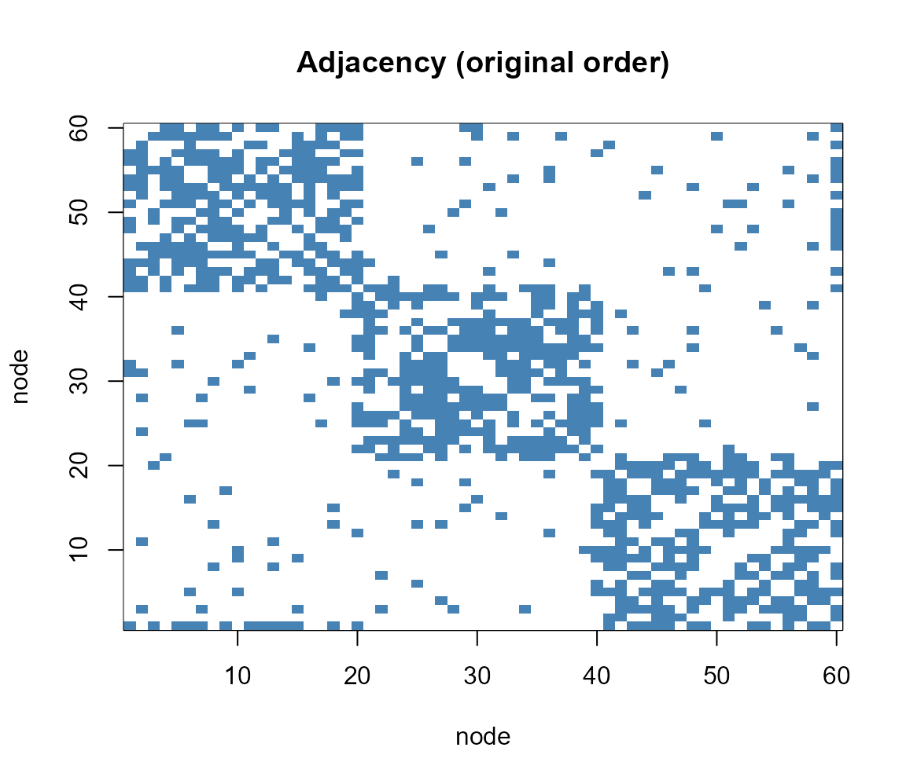
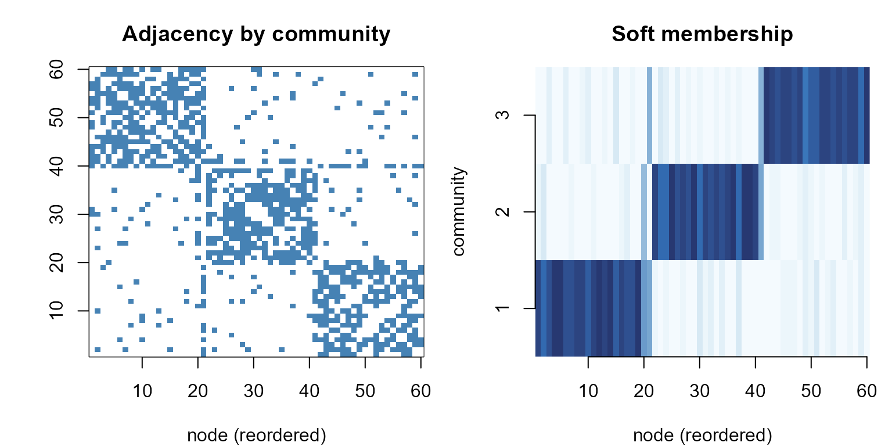
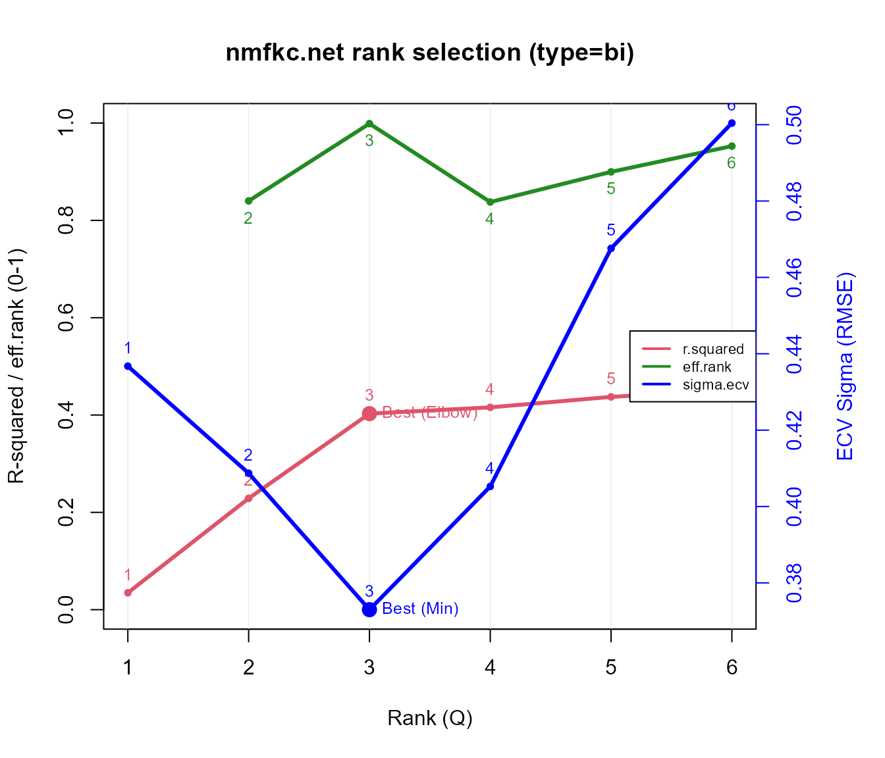

Soft community detection in networks with nmfkc.net
Source:vignettes/network-community-with-nmfkc.Rmd
network-community-with-nmfkc.RmdIntroduction
nmfkc.net() is a symmetric NMF for
network (adjacency) matrices. With type = "bi" it
factorises a symmetric matrix as with . Each row of is a node’s
graded membership across communities, so this is
soft community detection: unlike a hard method (e.g. Louvain),
boundary nodes are revealed by a mixed membership rather than being
forced into one group.
This vignette uses a self-contained synthetic network with a
known community structure, so we can check that
nmfkc.net() recovers it and that
nmfkc.net.rank() finds the right number of communities.
A synthetic network (stochastic block model, 3 communities)
We draw an undirected graph on 60 nodes from a
stochastic block model: three communities of 20 nodes,
with a high within-community edge probability and a low
between-community one. We then deliberately add three “bridge”
nodes (one per community), each also wired to a second
community, so that the network contains a few genuinely mixed nodes. The
true community of each node is known.
set.seed(1)
K <- 3; n_each <- 20; N <- K * n_each # 60 nodes, 3 communities
block <- rep(1:K, each = n_each) # true community labels
p_in <- 0.6; p_out <- 0.05
Prob <- matrix(p_out, N, N)
for (k in 1:K) Prob[block == k, block == k] <- p_in
Y <- matrix(rbinom(N * N, 1, Prob), N, N) # 0/1 adjacency
Y[lower.tri(Y)] <- t(Y)[lower.tri(Y)] # make symmetric
diag(Y) <- 0
# add three bridge nodes, each also linked to a second community
bridge <- c(20, 40, 60); into <- c(2, 3, 1)
for (i in seq_along(bridge)) {
b <- bridge[i]; tgt <- which(block == into[i])
e <- rbinom(length(tgt), 1, 0.45)
Y[b, tgt] <- pmax(Y[b, tgt], e); Y[tgt, b] <- Y[b, tgt]
}
isSymmetric(Y); sum(Y) / 2 # symmetric, number of edges
#> [1] TRUE
#> [1] 437
# adjacency matrix in the original (random) node order -- structure is hidden
image(1:N, 1:N, Y[, N:1], col = c("white", "steelblue"),
xlab = "node", ylab = "node", main = "Adjacency (original order)")
Soft community detection with nmfkc.net
res <- nmfkc.net(Y, rank = 3, type = "bi", nstart = 10, maxit = 500)
res$r.squared # fit
#> [1] 0.4028952
head(round(res$X.prob, 2)) # soft membership: rows = nodes, columns = communities
#> Basis1 Basis2 Basis3
#> [1,] 0.92 0.08 0.00
#> [2,] 0.80 0.16 0.04
#> [3,] 0.88 0.00 0.12
#> [4,] 0.96 0.04 0.00
#> [5,] 0.96 0.04 0.00
#> [6,] 0.86 0.02 0.12
head(res$X.cluster) # hard label = argmax membership
#> [1] 1 1 1 1 1 1Did it recover the known communities?
table(true = block, estimated = res$X.cluster)
#> estimated
#> true 1 2 3
#> 1 20 0 0
#> 2 0 20 0
#> 3 1 0 19
# the three bridge nodes have genuinely split memberships
round(res$X.prob[bridge, ] * 100, 1)
#> Basis1 Basis2 Basis3
#> [1,] 57.4 41.4 1.1
#> [2,] 0.7 53.4 45.9
#> [3,] 51.1 0.0 48.9The cross-tabulation is essentially block-diagonal: apart from the bridge nodes, every node is assigned to its true community. The bridge nodes (rows above) are roughly 50/50 between two communities, so their hard label simply tips to whichever side is marginally stronger — exactly the situation where a soft membership is more informative than a forced assignment.
Visualising the result
Re-ordering the nodes by the recovered community turns the adjacency matrix into a clean block-diagonal, and the membership matrix shows three crisp blocks:
ord <- order(res$X.cluster)
op <- par(mfrow = c(1, 2), mar = c(4, 4, 3, 1))
image(1:N, 1:N, Y[ord, rev(ord)], col = c("white", "steelblue"),
xlab = "node (reordered)", ylab = "", main = "Adjacency by community")
image(1:N, 1:K, res$X.prob[ord, , drop = FALSE],
col = hcl.colors(20, "Blues", rev = TRUE),
xlab = "node (reordered)", ylab = "community", axes = FALSE,
main = "Soft membership")
axis(1); axis(2, at = 1:K)
par(op)Network diagram (Graphviz DOT): soft vs. hard
nmfkc.net.DOT() turns the fit into a Graphviz
DOT graph: each network node is linked to the community
(basis) hubs by edges whose thickness encodes the membership strength.
We raise threshold to 0.25 so that only
substantial memberships are drawn — each pure node then links to a
single hub, which lets the neato layout pull the
three communities apart, while the bridge nodes keep both links
and settle in between. Rendered with the suggested package
DiagrammeR, it embeds directly in the HTML output. The
only difference between the two views below is the node
colour:
-
Y.cluster = "soft"(default) blends the community colours in proportion to the membership, so the three bridge nodes appear in a mixed colour. -
Y.cluster = "hard"paints each node in the single colour of its dominant community.
Soft – the three bridge nodes added earlier
(bridge <- c(20, 40, 60), each wired to a second
community) show a blended colour:
dot_soft <- nmfkc.net.DOT(res,
Y.label = as.character(1:N), X.label = paste("Community", 1:K),
Y.title = "Network nodes", X.title = "Communities",
layout = "neato", threshold = 0.25, Y.cluster = "soft")
DiagrammeR::grViz(as.character(dot_soft))Hard – those same bridge nodes (20, 40, 60) are forced into one community colour:
dot_hard <- nmfkc.net.DOT(res,
Y.label = as.character(1:N), X.label = paste("Community", 1:K),
Y.title = "Network nodes", X.title = "Communities",
layout = "neato", threshold = 0.25, Y.cluster = "hard")
DiagrammeR::grViz(as.character(dot_hard))(If DiagrammeR is not installed, both diagrams are skipped.)
How many communities? nmfkc.net.rank
The same rank-selection diagnostics as nmfkc.rank are
available for the symmetric model. The recommended rank is the
cross-validation (ECV) minimum; the effective rank and R-squared elbow
corroborate it.
rk <- nmfkc.net.rank(Y, rank = 1:6, type = "bi", nstart = 5)
#> Note: sample-clustering quality (silhouette / CPCC / dist.cor) is not part of rank selection; compute it from a list of fits with nmf.cluster.criteria(). See ?nmf.cluster.criteria
rk$rank.best
#> [1] 3
round(rk$criteria, 3)
#> rank effective.rank effective.rank.ratio r.squared sigma.ecv
#> 1 1 NA NA 0.035 0.437
#> 2 2 1.944 0.972 0.229 0.409
#> 3 3 2.999 1.000 0.403 0.373
#> 4 4 3.830 0.958 0.416 0.405
#> 5 5 4.860 0.972 0.437 0.468
#> 6 6 5.918 0.986 0.452 0.500
#> effective.rank.expected effective.rank.index
#> 1 1.000 NA
#> 2 1.649 0.840
#> 3 2.301 0.999
#> 4 2.955 0.838
#> 5 3.609 0.900
#> 6 4.263 0.953Remarks
nmfkc.net() recovers the three planted communities for
the core nodes, and nmfkc.net.rank() selects three. Because
the membership is soft (res$X.prob), the three
bridge nodes that sit between communities show a split membership
instead of being forced into one group — the practical advantage of NMF
over hard community detection, made visible by the soft-vs-hard DOT
graphs above.
type = "bi" () is the usual choice for an undirected,
non-negative network; type = "tri" () adds a
community-interaction matrix , and type = "signed" handles
networks with negative weights. For choosing the number of communities,
the same advice as in the rank-selection vignette applies: use
the ECV minimum as the primary criterion and corroborate it with the
effective rank.
See ?nmfkc.net, ?nmfkc.net.ecv,
?nmfkc.net.rank, and the companion vignette “Choosing
the NMF rank on data with a known true rank”.